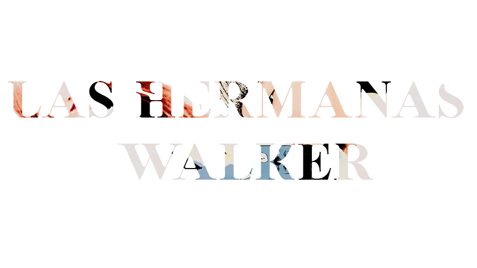

LAS HERMANAS WALKER
Una historia interactiva de Sofía González Regis.
Producción de Materiales Multimedia
Máster en Letras Digitales
Universidad Complutense de Madrid
(Haz click en el título para empezar)
DECLARACIÓN SOBRE EL USO DE MATERIALES CON FINES EDUCATIVOS
El presente trabajo es un proyecto de clase elaborado por Sofía González para la asignatura Producción de Materiales Multimedia del curso 2025/2026.
1. Finalidad y ámbito de aplicación
Este proyecto tiene una finalidad exclusivamente educativa y no comercial. Se acoge a las excepciones al derecho de autor establecidas en el artículo 32 (Cita e Ilustración con fines educativos) del Real Decreto Legislativo 1/1996, por el que se aprueba el Texto Refundido de la Ley de Propiedad Intelectual (LPI).
2. Materiales utilizados y atribución
En este trabajo se han utilizado fragmentos de las siguientes obras, cuyos derechos de autor pertenecen a sus respectivos creadores. Su inclusión se hace a título de cita, comentario o para su análisis dentro del discurso de este proyecto:
- Imágenes:
Fotografías de las artistas SuA y JiU, pertenecientes al grupo musical Dreamcatcher.
Imágenes de stock. Fuentes: Unsplash, Pexels
Música de stock. Fuentes: Pixabay
- Fragmentos audiovisuales:
Serie de televisión Mine (2021), creada por Baek Mi-kyung para tvN.
Película Vértigo (Vertigo) (1958), dirigida por Alfred Hitchcock.
3. Limitaciones del uso
Se hace constar expresamente que:
- La inclusión de estos materiales se limita a lo estrictamente necesario para ilustrar el contenido educativo del proyecto.
- La autora de este trabajo no reclama ningún derecho de propiedad sobre los materiales incluidos, a excepción de las ediciones y templates.
- Este documento y su contenido no están afiliados, patrocinados ni respaldados oficialmente por los titulares de los derechos de autor de los materiales citados.
4. Programas o aplicaciones empleadas
- Para la edición de imágenes se ha hecho uso de Photopea y Clip Studio Paint. Tema 1
- Para la creación de imágenes generadas por IA se ha hecho uso de Gemini. Tema 2
- Para la edición de audio se ha hecho uso de Audacity y Movavi Video Suite 17. Tema 3
- Para la edición de vídeo se ha hecho uso de CapCut y Movavi Video Suite 17. Tema 4
- La obra es la continuación de la creada para clase por medio de Twine. Tema 5
- Para la programación de la web se ha hecho uso de Visual Studio Code y Cursor. Tema 6